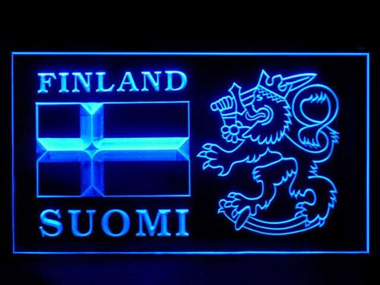

It’s impossible to catalog the numerous series and films that made their way overseas in the 1990s. Anime was a fertile market for American distributors whose only production costs involved re-recording/rewriting dialogue as well as editing content and timing. Many television stations like the Sci-Fi Channel and Cartoon Network would run anime shows in specialized blocks aimed at older children and teenagers. Of these, Cartoon Network’s Toonami was the most influential in bringing several action-oriented anime shows to the widest possible audience. The 1990s also provided Americans with their biggest anime cultural effects. Shows like Sailor Moon, Dragon Ball Z, and Gundam Wing were not only big hits in Japan but in America as well. The influx of other elements of Japanese pop culture began to take hold. The largest of these was Pokémon which was not only an anime series but also featured a video game and card game component. In the realm of film, anime was breaching into the mainstream like never before. While movies like Ghost in the Shell remained beloved by anime fans, it also went on the be a huge inspiration for The Matrix, one of the highest grossing films of the 1990s. Miyazaki’s films began to be even more widely accepted, with Princess Mononoke becoming the most expensive animated production ever made at the time.
